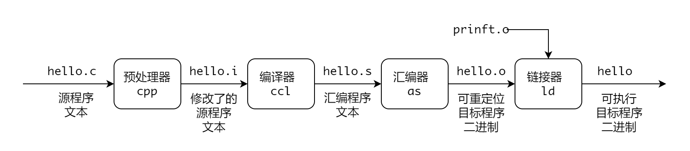

OS Tips
C 语言到可执行文件的步骤
编译成可执行文件，然后执行：GCC 编译器驱动程序读取源程序文件 hello.c，并把它翻译成一个可执行目标文件 hello。这个翻译过程可分为四个阶段，如下图所示。
执行这四个阶段的程序（预处理器、编译器、汇编器和链接器）一起构成了编译系统（compilation system）。

预处理阶段
预处理器 cpp 根据以字符 # 开头的命令，修改原始的 C 程序。比如 hello.c 中的第一行的 #include <stdio.h> 告诉预处理器读取系统
头文件 stdio.h 的内容，并把它直接插入程序文本中。结果就得到另一个 C 程序，通常以 .i 作为文件的扩展名。
只进行至预处理阶段的命令，如果不加 -o 选项的话直接输出到控制台而不是 hello.i。
编译阶段
编译器 ccl 将文本文件翻译成文本文件 hello.s，它包含一个汇编程序。
只进行至编译阶段的命令，此时 -o 是可选的，默认会生成一个 hello.s 文件。
汇编阶段
接下来，汇编器 as 将 hello.s 翻译成机器语言指令，把这些指令打包成一种叫做可重定位目标程序（relocatable object program）的格式，
并将结果保存在文件 hello.o 中。
只进行至汇编阶段的命令，此时 -o 选项是可选的，默认会生成一个hello.o 文件。
链接阶段
hello 程序调用了 printf 函数，它是标准 C 库中的函数。printf 函数存在于一个名为 printf.o 的单独的预编译好了的目标文件中，而这个
文件必须以某种方式合并到我们的 hello.o 程序中。链接器 ld 就负责处理这种合并，结果就是得到 hello 文件，它是一个可执行目标文件，可以被加载到内存中，
由系统执行。
生成可执行文件的命令，如果不加 -o 选项的话默认生成的是 a.out 文件（assembly output，即汇编输出）。
库文件和头文件
头文件
头文件用来提供对常量的定义和对系统函数及库函数调用的声明。对 C 语言来说，这些头文件几乎总是位于 /usr/include 目录及其子目录中。
# ls /usr/include/
···
ctype.h gnu-versions.h netash protocols stdio_ext.h video
dirent.h grp.h netatalk pthread.h stdio.h wait.h
dlfcn.h gshadow.h netax25 pty.h stdlib.h wchar.h
elf.h iconv.h netdb.h pwd.h string.h wctype.h
endian.h ifaddrs.h neteconet python3.9 strings.h wordexp.h
···
在调用 C 语言编译器时，可以使用 -I 选项来包含保存在子目录或非标准位置中的头文件。例如：
/home/computer/c 目录中查找程序 fred.c 中包含的头文件。
如果我们想查找用于从程序中返回退出状态的 #define 定义的名字，可以在 /usr/include 目录下使用 grep 命令进行搜索。
# grep EXIT_ *.h
···
stdlib.h:#define EXIT_FAILURE 1 /* Failing exit status. */
stdlib.h:#define EXIT_SUCCESS 0 /* Successful exit status. */
库文件
库是一组预先编译好的函数的集合，这些函数是按照可重用的原则编写的。它们通常有一组相互关联的函数组成以执行某项常见的任务。
标准系统库文件一般存储在 /lib 和 /usr/lib 目录中。C 语言编译器（确切的说是链接器，ld）需要知道搜索哪些库文件，因为在默认情况下，它只搜索
标准 C 语言库。所以仅仅是把库文件放在标准目录中是不够的，还需要使库文件遵循特定的命名规范并且在命令行中明确指定。
库文件的名字总是 lib 开头，随后的部分指明这是什么库（例如，m 代表数据学库）。文件名的后缀一般为 .a 或者 .so。
.a代表传统的静态函数库。.so代表共享函数库。
函数库通常同时以静态库和共享库两种格式存在，可以使用 ls /usr/lib 命令查看。
指定库文件
在编译时可以通过给出完整的库文件路径来告诉编译器要搜索的库文件：
该命令要求编译器编译fred.c 文件，将编译产生的文件命名为 fred，并且除了搜索标准的 C 语言函数库以外，还搜索数据学库以解决函数引用问题。
下面的命令也能产生类似的结果：
-lm 是简写的方式，它代表的是标准库目录中名为 libm.a 的函数库，并且 -lm 有一个特性就是如果存在共享库的化会优先使用共享库。
指定库文件搜索路径
虽然库文件和头文件一样，通常都保存在标准目录下，但是也可以通过 -L 选项指示编译器增加库的搜索路径。
/usr/openwin/lib/ 目录中 libX11 库来编译和链接 x11fred 程序。
静态库
函数库最简单的形式是一组处于“装备好使用”状态的目标文件。当程序需要使用函数库中的某个函数时，它包含一个声名该函数的头文件。编译器和链接器 负责将程序代码和函数库结合在一起组成一个单独的可执行文件。
创建和维护静态库只需要使用 ar（代表 archive，即建立归档文件）程序和使用 gcc -c 命令对函数分别进行编译。应该尽可能把函数保存在不同的源文件中，
如果函数需要访问公共数据，可以把它们放在同一个源文件中，并使用在该文件中声名的公共变量。
下面是创建静态库的实例，实现一个小型函数库 foo，包含两个函数 fred 和 bill，然后在主程序中 hello 调用其中一个函数 bill。
-
两个函数分别创建源文件
第二个源文件： 头文件：fred.c和bill.c，同时编写包含这两个函数的头文件libfoo.h。下面是第一个源文件： -
分别编译这些函数以产生要包含在库文件中的目标文件。使用 -c 选项生成
可重定位目标文件，会生成fred.o和bill.o文件。如果此时尝试创建一个完成的程序将不会成功，因为还没定义main函数。 -
创建库文件。使用 ar 程序创建归档文件这里是库文件
libfoo.a，并将可重定位目标文件添加进去。 -
在主程序中加入
编译运行，libfoo.h头文件，调用bill函数。-L.指定额外在当前目录中查找库文件，-lfoo执行查找库文件名libfoo.a或者libfoo.so。 -
可以编写一个 makefile 省去一步一步执行命令，直接执行
make hello直接生成可执行文件。
共享库
静态库的一个缺点是，当同时运行许多应用程序并且它们都使用来自同一个函数库的函数时，内存中就会有同一个函数的多个副本，而且程序文件自身中也有 多份同样的副本。这将消耗更多的内存和磁盘空间。
共享库可以克服静态库的上述不足。当一个程序使用共享库时，它的链接方式是这样的：程序本身不在包含函数代码，而是引用运行时可访问的共享代码。当 编译好的程序被装载到内存中执行时，函数引用被解析并产生对共享库的调用，如果有必要，共享库才被加载到内存中。
通过这种方法，系统可以只保留共享库的一份副本供许多应用程序同时使用，并且在磁盘上也仅保存一份。使用共享库的另一个好处是共享库的更新可以独立于 依赖它的应用程序。
下面是创建静态库的实例，仍然使用静态库的示例源文件进行操作，目录位于 /home/c，文件包括：fred.c、bill.c、hello.c。
-
编译函数以产生要包含在库文件中的目标文件，
-fPIC选项表示编译为位置独立的代码，这是共享库必须的，因为共享库需要在不同的进程中被加载执行。 -
将两个目标文件链接成共享库，
-shared表示生成共享库而不是可执行文件。 -
编译生成可执行文件，并运行程序。
GDB
检查安装
使用 gcc -g 选项编译源文件，然后 gdb 可执行文件即可进入调试。
gdb 选项
l查看程序，默认每次输出 10 行，可多次使用 l 查看程序。r从头执行程序， 遇到断点会阻塞。-
q退出调试。 -
b进行打断点，两种方式 b func_name，b line_number info b查看断点列表信息。-
n一行一行执行代码。如果该行代码调用的函数里面有断点，n 会进入到断点里面。 -
p打印变量的值。例如p *s、p arr[1]、p &arr[1]。 -
step可以进入函数。 -
shell cmd可以执行命令。 set logging on将调试信息输出到日志。
观察点 watchpoint，用来监听地址的值是否发生变化，如果在程序执行过程中观察点的值发生变化会输出响应的信息。
- 增加观察点 `watch *0x7fffffffe6bc。
- 查看观察点
info watchpoints。
观察点的示例。
// 获取变量 a 的地址
(gdb) p &a
$1 = (int *) 0x7fffffffe6bc
// 增加观察点
(gdb) watch *0x7fffffffe6bc
Hardware watchpoint 2: *0x7fffffffe6bc
(gdb) n
10 a++;
// 执行 a++ 观察点的值发生了变化
(gdb) n
Hardware watchpoint 2: *0x7fffffffe6bc
Old value = 1
New value = 2
0x000055555555513e in main () at wp.c:10
10 a++;
(gdb) n
Breakpoint 1, main () at wp.c:8
8 if (a < 5)
(gdb) n
10 a++;
// 继续执行 a++ 观察点的值又发生了变化
(gdb) n
Hardware watchpoint 2: *0x7fffffffe6bc
Old value = 2
New value = 3
0x000055555555513e in main () at wp.c:10
10 a++;
从可执行进行反汇编
QA:
-
GCC 生成的汇编和 NASM 编译得到的汇编有什么不同？
-
什么叫做可重定位目标程序？
-
什么是标准 C 库，还有什么 C 库？
-
为什么 C 语言的
main函数可以不写return语句？
如果main函数中不写return语句，则默认返回 0，表示程序正常执行退出了。但是为了保持好的习惯，还是应该加上return 0;语句。 -
C 语言头文件
#include <>和#include ""有什么区别？#include <>用来引用标准库头文件，这些头文件通常已经安装在系统的标准目录中。编译器会在这个标准目录中查找头文件并将其包含到代码中。#include ""用来引用自定义头文件，这些头文件通常是用户自己编写的。编译器会在当前文件所在目录中查找头文件并将其包含进代码中。